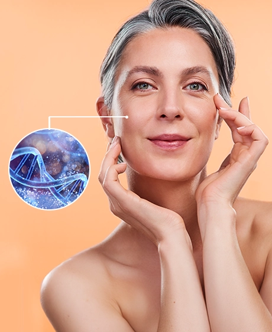
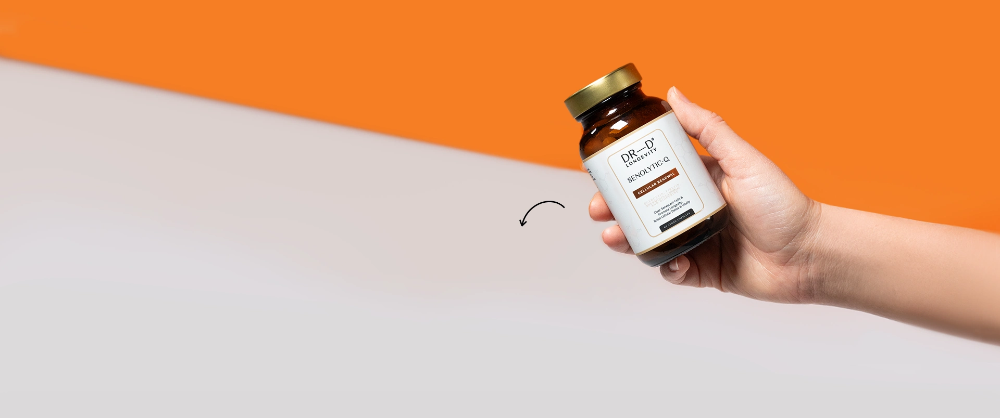
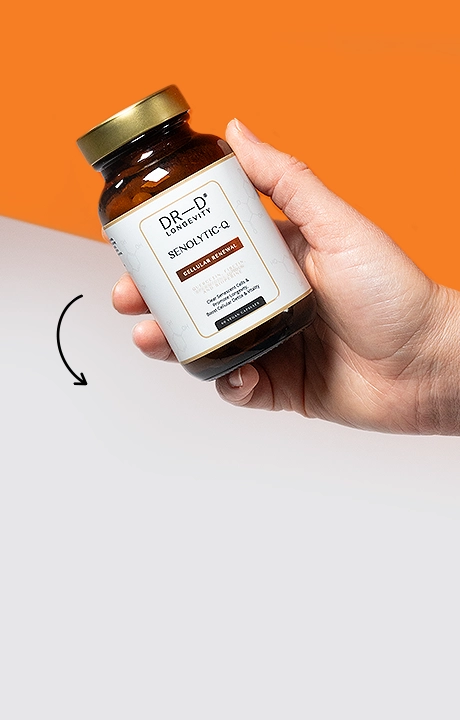
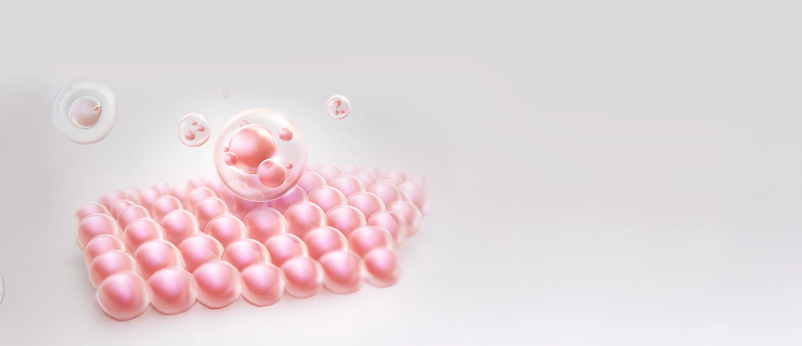
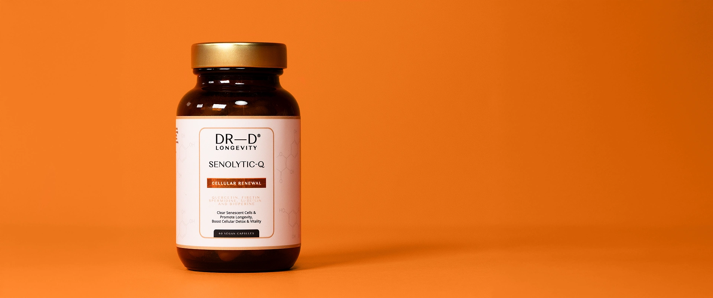
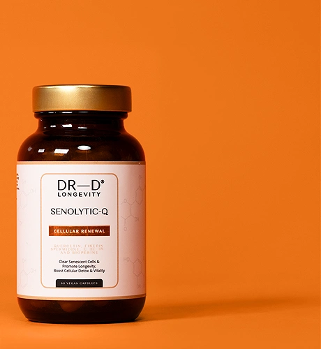

Освободи се от тяхната тежест по естествен начин с подмладяващите свойства на сенолитиците.
Освободи се от тяхната тежест по естествен начин с подмладяващите свойства на сенолитиците.
Възстановителните процеси се забавят
Възпаленията зачестяват, стареенето се забързва
Умората и отпадналостта стават ежедневие
Кожата губи еластичност и блясък
Метаболизмът се забавя
Представи си дома си след основно почистване – усещаш лекота и простор. Senolytic-Q прави същото за тялото ти.
Този натурален клетъчен чистач премахва „износените“ клетки, за да освободи място за здрави и нови клетки, които те изпълват с енергия и живот. Прави това като:


Премахва остарелите клетки
Забавя стареенето и регенерира
Повишава енергията и метаболизма
Неутрализира свободните радикали
Повишава цялостно качеството на живота

Наситената до съвършенство формула с екстракти от кверцетин, физетин и лутеолин изчиства щадящо старите клетки.
Спермидин и теафлавин активират клетъчната регенерация и предпазват от оксидативен стрес.
Биоперин засилва в пъти благотворното действие на сенолитиците, за да усещаш повече енергия, жизненост и подмладяваща свежест отвътре.
Наситената до съвършенство формула с екстракти от кверцетин, физетин и лутеолин изчиства щадящо старите клетки.
Спермидин и теафлавин активират клетъчната регенерация и предпазват от оксидативен стрес.
Биоперин засилва в пъти благотворното действие на сенолитиците, за да усещаш повече енергия, жизненост и подмладяваща свежест отвътре.
Senolytic-Q комбинира две ключови антиейдж действия
Така предпазва тялото от натрупване на стари клетки, а здравите поддържа защитени от увреждане. Укрепва органите и тъканите, правейки ги по-устойчиви на възпаления. Подпомага бързото възстановяване след интензивно физическо натоварване и боледуване.


Д-р Радина Денкова е специалист, воден от науката и вдъхновен от красотата във всички нейни форми. С повече от 30 години опит в естетичната дерматология, тя е сред най-уважаваните европейски специалисти.
Вярва, че истинската красота започва с грижата за всяка клетка в тялото. Нейният холистичен подход съчетава здравето и естетичната хармония в едно.
Образованието си завършва в България, след което се усъвършенства в Бон, Париж и Виена. Днес е основател и собственик на водещ център по естетична дерматология с няколко клиники в България и една в Австрия.
През последните години д-р Денкова изнася лекции и споделя своя опит в повече от 50 страни по света, утвърждавайки се като вдъхновител и ментор за професионалистите в своята област.